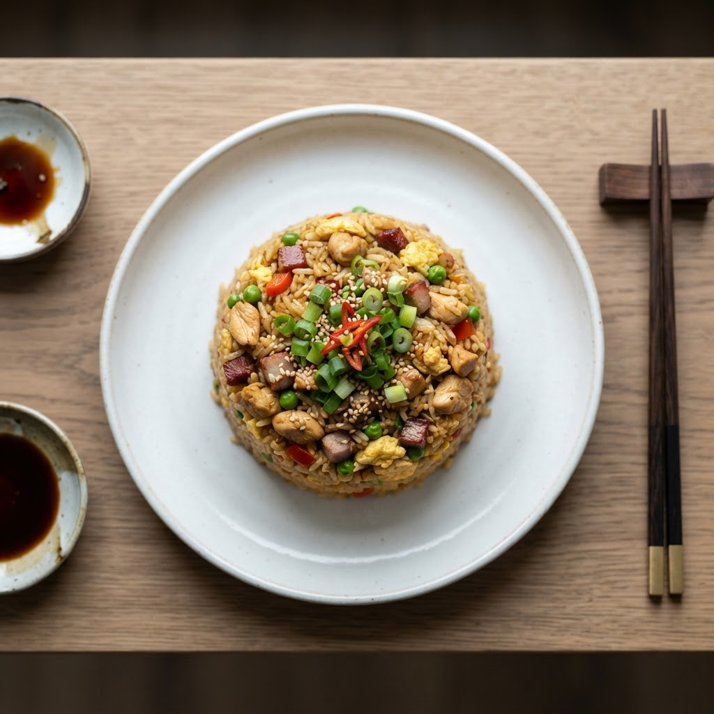
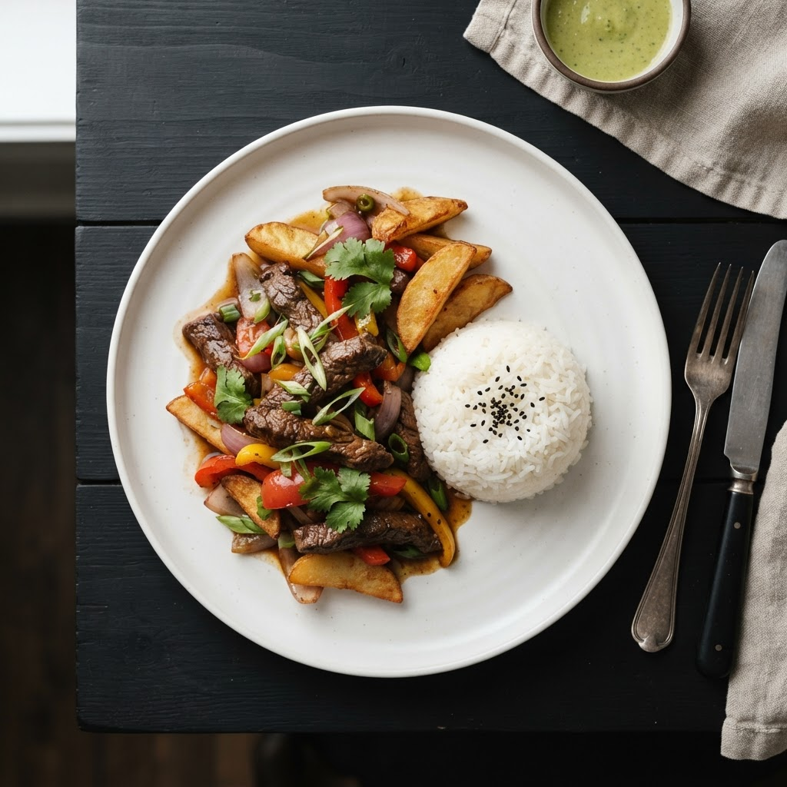

COCINA DE FUSIÓN
Wok&Home
Peruano-China
Experimenta la fusión auténtica de técnicas chinas milenarias con los sabores únicos del Perú, honrando la herencia de la inmigración china.
Comida Auténtica
Platillos Chifa con técnicas wok e ingredientes peruanos frescos
Utensilios Premium
Herramientas tradicionales para la cocina Chifa en tu hogar
Ingredientes Premium
Kits de ingredientes listos para preparar nuestros platos en casa
LO MÁS POPULAR
Platos Recomendados
Descubre nuestros platillos más queridos por nuestros clientes

Arroz Chaufa Premium
Nuestro bestseller con camarones frescos y vegetales salteados al wok

Lomo Saltado Estilo Chino
Carne premium salteada con papas crujientes y toque umami
Ceviche con Toque Oriental
Pescado fresco marinado con yuzu peruano y jengibre japonés
TESTIMONIOS
Lo que Dicen nuestros Clientes
Miles de clientes satisfechos disfrutan de nuestra comida y experiencias cada semana
María García
Lima, Perú
La experiencia en Wok&Home fue increíble. Los platillos tienen un sabor auténtico que te transporta a la tradición culinaria Chifa. El servicio fue excelente y la presentación de los platos simplemente hermosa.
Hace 2 semanas
Carlos Rodríguez
Miraflores, Lima
Definitivamente el mejor restaurante Chifa en la ciudad. Los utensilios que venden son de excelente calidad y el personal conoce perfectamente los detalles de cada platillo. Volveré pronto.
Hace 3 semanas
Laura Mendez
San Isidro, Lima
Asistí a uno de sus talleres culinarios y fue una experiencia transformadora. El chef fue muy paciente y los platillos que preparamos quedaron deliciosos. Muy recomendado para aprender técnicas auténticas.
Hace 1 mes
José Luis Fernández
Barranco, Lima
La fusión de sabores Peruano-Chinesa es simplemente magistral. Cada plato es una obra de arte culinaria. Los ingredientes son frescos y la atención al detalle es impecable.
Hace 1 mes
Calificación Promedio
Basado en 1,200+ reseñas